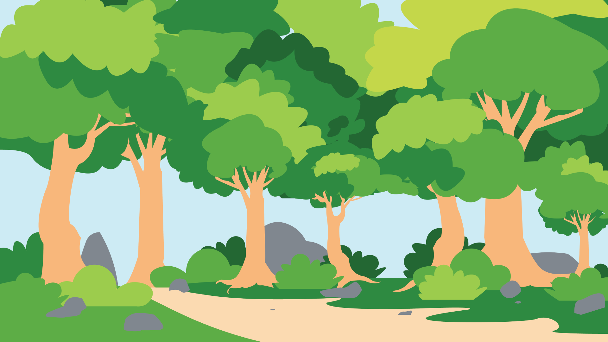

I am dynamic and forward-thinking software engineer with a passion for innovation and problem-solving.
I have a passion for learning, evident by ability to embrace technical challenges, and ability to grasp new concepts quickly. I have a solid foundation in data structures, machine learning, and the development life cycle. I'm excited about the potential of AI applications and large-scale ML models which can push the boundaries of what is achievable with technology.
In addition to my technical skills, I'm proficient in Mandarin and have a basic understanding in Japanese. This reflects my committment to embrace diversity and global perspectives.
Effective communication is paramount in my professional approach. I strive to bridge the gap between between non-technical team members by explaining technical processes in a way that is non-patronizing and easy to understand.
Environmental and Background Art

")

")
")